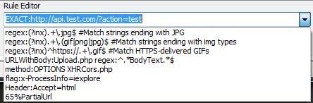

背景
作为一名客户端的开发人员，难免需要跟服务端的人员对接接口需求，不知道读者所在的公司服务端响应速度怎么样，博主公司的服务端资源紧缺，初步定义好接口文档后，还需要进入漫长的排单期，如果能自己在本地模拟接口响应，并返回约定的响应数据，就可以先进行客户端的开发工作，等服务端提供接口后直接替换掉接口请求就可以快速接入了。
相信有很多小伙伴跟我一样有类似的需求，不知道大家都用什么工具，如果你有更好的工具推荐给我使用，万分感激！！
Fiddler、Charles 之类的工具都可以实现模拟接口的返回数据，但是不方便啊，偶尔改个接口返回值还可以将就，长期用于模拟接口返回值还是不要了吧。
之前是博主孤陋寡闻，Fiddler 其实可以很方便的实现接口返回数据的模拟，只是接口多了的情况下不方便管理，但是也有它自己的优势，可以和API Faker互补，在Fiddler部分再详细说明。
下面介绍近期接触的几个工具：
Mock
介绍
Mock 是用 js 实现的，用于拦截 ajax 请求，返回一定规则的随机数据，可以嵌入到网页开发，如果你只开发Native应用，可以跳过这部分，转到 API Faker 部分。
安装
官方有很详细的安装教程，这里不做赘述，如果你跟我有一样的需求，不想用Node、Bower、RequireJS、SeaJS等框架，只是想写个简单的页面，请继续看。
下载 mock-min.js 文件，放到项目的Js目录，如
/<ProjectDir>/Js/mock-min.js在需要模拟接口数据的页面引入就可以了
<script type="text/javascript" src="Js/mock-min.js"></script> |
使用
新建一个js文件，用户模拟接口数据
Mock.mock('http://g.cn', {
'name' : '[](/user/name)()',
'age|1-100': 100,
'color' : '[](/user/color)'
});发送 ajax 请求
$.ajax({
url: 'http://g.cn',
}).done(function(data, status, xhr){
console.log(
JSON.stringify(data, null, 4)
)
})
虽然很想说没有然后了，但是想要玩转 Mock，还是有一些学习成本的，不过绝对值得拥有啊。
附：
API-Faker
简介
API Faker 顾名思义，它是一个模拟器，用NodeJs开发，可以模拟网络接口api行为返回json(jsonp),text或xml格式数据。有一个GUI的管理后台，支持浏览器: Chrome, Firefox, Safari, Opera, Internet Explorer 9+.
安装
Api Faker运行在NodeJs环境下，请确保系统中已经安装好NodeJs。
从下面地址下载最新的文件 https://github.com/hylin/apifaker/archive/master.zip 解压到任意目录，命令行中cd到该解压目录，安装依赖组件，根据实际情况修改 config.js 配置，然后启动即可。
config.js
var config = { |
config.js 配置简单明了，需要注意的是，如果80端口被其他服务占用，需要修改端口号的话，同时要在siteUrl和staticUrl的地址后面加上配置的端口号，后期配置接口的时候，也需要在接口地址的host后面带上端口号，最好还是想办法监听80端口，后期使用可以省事不少。
运行
启用服务的指令：
npm install |
注意 Mac 用户在默认情况下没有权限监听 80 端口，需要用管理员权限执行 node 命令。
npm install |
使用
API信息管理
访问
http://工具所在服务器地址/~apifaker/，即可开始管理API。添加接口和添加模拟数据记录页各个字段都有详细的说明，请参考各个字段说明。
防坑指南：配置接口地址的域名时，记得加上 http 或 https !!!
API模拟请求
在设备B部署服务，配置模拟接口信息，在设备A配置接口 hosts 指向设备B，然后在设备A发起接口请求，就可以获取到配置的模拟数据了。设置hosts建议使用fiddler，方便快捷。默认带了两个测试接口，可以先测试流程是否正常。
后台运行
在实际生产环境下，要一直登录一个用户开启控制台运行 NodeJs 程序是不太现实的，那么如何让 NodeJs 程序在后台运行呢，推荐使用 forever。
$ sudo npm install forever -g #安装 |
forever 命令语法及使用 https://github.com/nodejitsu/forever
不足
乍一看 API Faker 能很好的满足模拟接口返回数据的需求，但是博主认为它有两个缺陷，一个是配置流程相对繁琐，二是接口参数识别只支持 Query 参数和 Post 参数，不支持 Header 参数识别，现在公司的接口多少都会用到 Header 参数吧。考虑到这两个缺点的存在，Fiddler 可以作为一个补充工具，在需要快速模拟少量接口时，可以用 Fiddler 迅速实现，在需要识别 Header 参数返回不同的数据时，也可以用 Fiddler。
Fiddler
The free web debugging proxy for any browser, system or platform
Fiddler 是什么就不做赘述了，大部分程序猿应该都不会陌生，这里讲的是如何用 Fiddler 快速模拟接口返回，首先使用浏览器发起一个接口请求，如 http://api.test.com/?action=test，使用 Fiddler 拦截。
选中拦截到的接口请求，在功能区切换到 AutoResponder，勾选 Enable rules，点击 Add Rule，在下方的 Rule Editor 区域配置拦截规则和返回规则。
拦截规则

返回规则
可以选择一个 json 文件，作为返回数据。
再次发起接口请求就可以得到配置的响应数据了。
友情提示：测试结束后记得关闭
Enable Rules。
参考